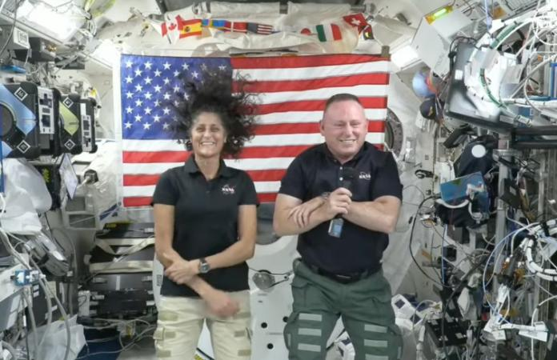

美国国家航空航天局（NASA）官员表示，自 6 月初以来被困在国际空间站的两名宇航员可能要到 2025 年才能返回地球。
美国宇航局一直在研究这两名被困宇航员是否可以搭乘 SpaceX 公司的飞船，而不是波音公司的“星际客船”（Starliner）回家。自从两个月前发射以来，“星际客船”一直问题不断。
NASA官员周三表示，波音太空舱的安全性仍存在不确定性，航天局在风险问题上存在分歧。
因此，试飞员布奇-威尔莫尔（Butch Wilmore）和苏妮塔-威廉姆斯（Sunita Williams）可能不得不在空间站上眼睁睁地看着他们的“星际客船”空载返回地球。
如果那样的话，NASA将在九月底的下一次SpaceX飞行任务中留下四名宇航员中的两名，将空余的座位留给威尔莫尔和威廉姆斯，以便他们在明年二月的返程中使用。这两名宇航员在6月5日作为“星际客船”的首批乘员升空时，预计只离开一两周。
NASA正在请更多的专家来分析“星际客船”对接前发生的推进器故障。与此同时，NASA也在更加密切地关注 SpaceX 公司作为后备力量的情况。NASA 太空行动任务负责人肯-鲍尔索克斯（Ken Bowersox）说：“在这一点上，我们可以选择任何一条路径”。
关于威尔莫尔和威廉姆斯返回地球的分歧促使官员们推迟了对“星际客船”的深入准备审查，并推迟了 SpaceX 原计划于周二进行的发射。
波音公司在公开场合坚称，它仍然支持“星际客船”。“星际客船”在6月6日与国际空间站对接的途中出现了机械故障，原本计划执行为期8天的任务。
波音公司在周五的一份声明中表示：“波音对星际客船及其载人安全返回的能力仍然充满信心。我们将继续支持NASA提出的额外测试、数据、分析和审查要求，以确认飞船的安全脱离对接和着陆能力”。
让宇航员乘坐 SpaceX 的太空舱返回将是对波音公司的重大打击。
今年 6 月的飞行是波音“星际客船”首次前往国际空间站执行载人任务。“星际客船”是这家航空巨头的旗舰产品，旨在与 SpaceX 争夺NASA的合同。
根据美国证券交易委员会（SEC）的文件显示，上周波音公司报告称其“星际客船”项目亏损了1.25亿美元，这是继之前该项目亏损11亿美元之后的又一次亏损。
据《华尔街日报》报道，“星际客船”完成其国际空间站任务的能力可能会影响其与 NASA 签订的未来六次飞行合同的命运。
“星际客船”的问题增加了波音公司这一季的困难，该公司正因一系列机械问题和举报者对其商用飞机的指控而受到严格审查。
本周四，罗伯特-“凯利”-奥特伯格（Robert “Kelly” Ortberg）将就任波音公司首席执行官一职，这些问题必将提上他的议事日程。(都市网Rick编译，图片来源NASA)
(ref:https://www.independent.co.uk/space/nasa-boeing-starliner-butch-wilmore-sunita-williams-b2593041.html)